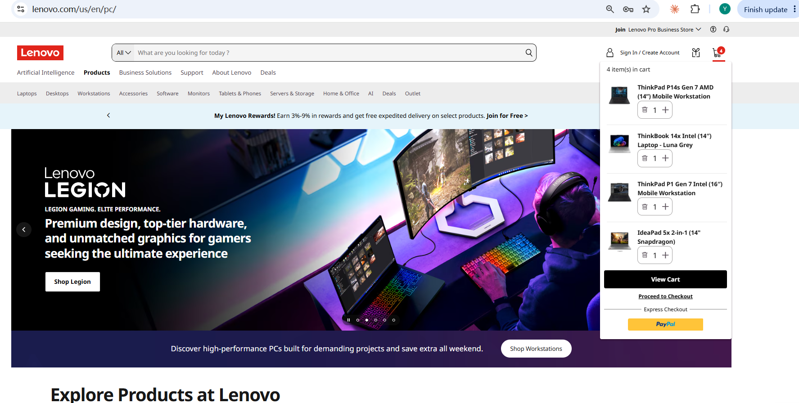
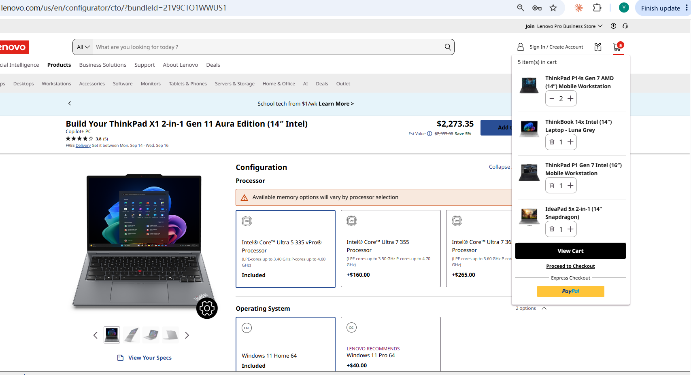
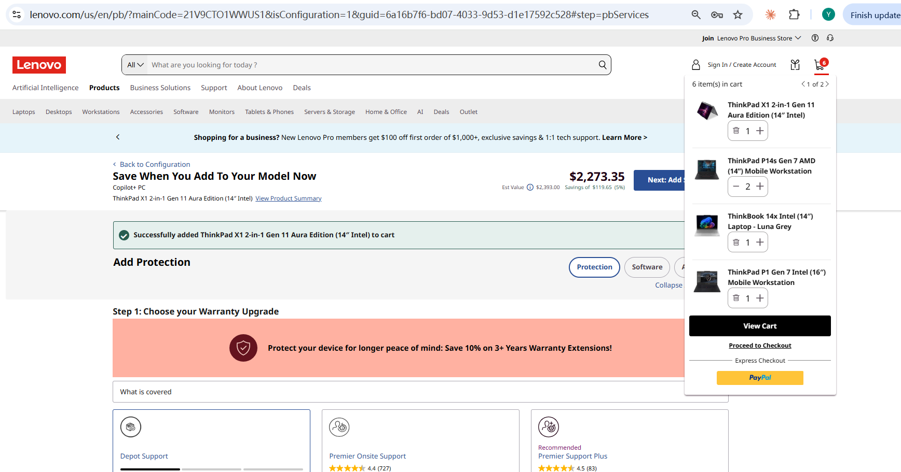
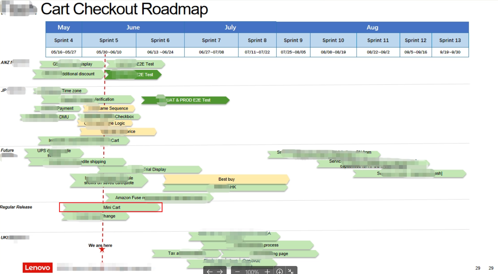
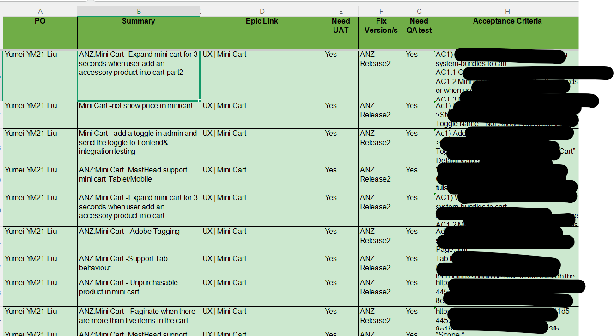

Mini Cart — Lenovo.com Checkout Experience
mini cart UI & interactions



Context & Problem
Customers had to leave their current page and go to a full cart page just to check contents, adjust quantities, or see pricing. The site needed a persistent mini cart accessible from anywhere.
Role & Scope
Senior Product Owner for Mini Cart, covering desktop, tablet, and mobile.
Requirements Ownership
I own the epic, covering edge cases like paginated carts, unpurchaseable products, bundles/add-ons, and configure-to-order items. I also drove gaps to closure — flagging missing analytics tagging documentation and pushing until the team delivered a written spec.
Strategy & Prioritization
The cart needed to behave differently by context — suppressed on checkout pages, configurable per country, and adaptive across breakpoints. I balanced this against a reusable interaction model (stepper for quantity, trash icon at zero) so most states shared one consistent pattern rather than custom designs.
Execution
Specified real-time cart updates without page reload, an animated removal sequence, and Saved-for-Later handling for unpurchaseable products. Partnered with the analytics team to define tracking for every interaction — open/close, quantity changes, navigation, errors — so the business could measure component-level usage.


Execution Planning
Outcomes
Shipped to production across desktop, tablet, and mobile with full analytics instrumentation in place to measure post-launch performance:
- Persistent mini cart accessible from any page on Lenovo.com
- Real-time cart updates without page reload
- Full WCAG 2.1 AA accessibility compliance
- Context-aware display (suppressed on checkout, configurable per country)
- Comprehensive analytics tracking for all interactions
- Responsive design across desktop, tablet, and mobile
- Handling of edge cases: paginated carts, bundles, configure-to-order items